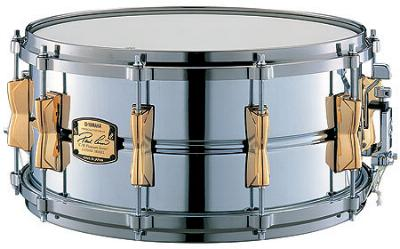

Малый барабан

Малый барабан— ударный музыкальный инструмент, один из основных компонентов ударной установки. Отличается ярким, резким и сухим звуком благодаря специальным металлическим пружинам, натянутым под нижним пластиком.
Конструкция
Малый барабан состоит из:
- Корпуса — обычно деревянного или металлического.
- Двух пластиков — верхнего (ударного) и нижнего (резонансного).
- Пружинного подструнника, создающего характерное дребезжание.
- Натяжного механизма для регулировки звука.
Использование
Малый барабан используется:
- В оркестрах и маршевых группах.
- В рок, джаз и поп-музыке как часть ударной установки.
- В военных и парадных маршах.
История
Малый барабан происходит от военных барабанов, применявшихся для подачи сигналов. Со временем он стал основным ритмическим инструментом в различных музыкальных жанрах.
Интересные факты
- Звук малого барабана может сильно меняться в зависимости от натяжения пружин и материала корпуса.
- Соло на малом барабане — обязательная часть для многих ударников при поступлении в музыкальные учебные заведения.